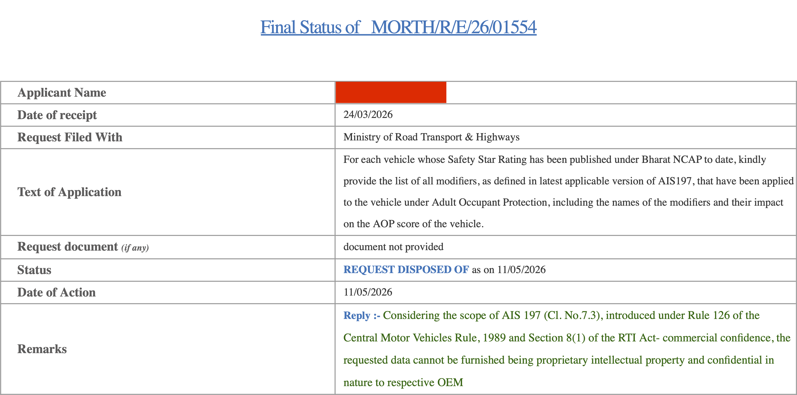
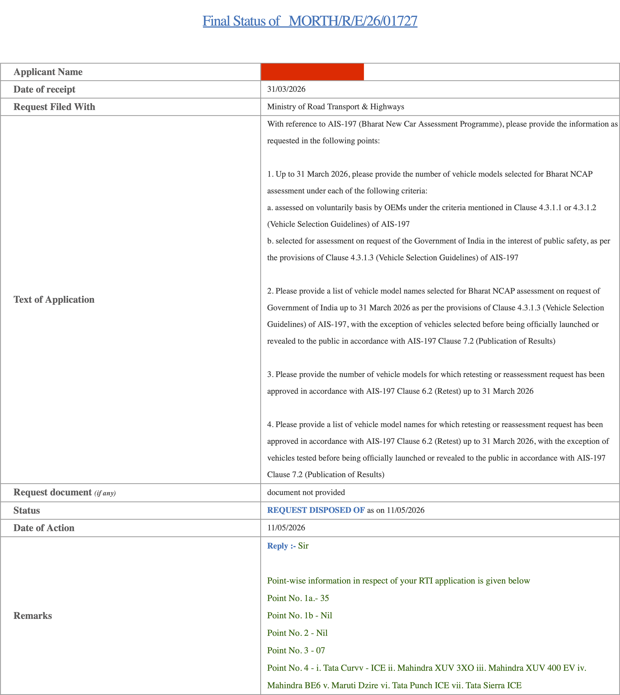

RTI reveals BNCAP retested 7 cars before publishing results | The Yawning Chihuahua

The Yawning Chihuahua
Home | Seatbelt reminder evaluation | Twitter | Instagram | YouTube | Legacy website
BLOG POST
RTI reveals BNCAP retested 7 cars before publishing results
12.05.2026
In late March, I had filed two RTIs with MoRTH hoping to learn some details about BNCAP, particularly:
- the much-anticipated modifier statuses of cars (bodyshell instability, footwell rupture, etc.)
- if any of the cars tested so far have been selected by the government
- if retests were involved in any of the results so far
Today I received responses to both, and am reproducing them here in full.
The highlights (my interpretation):
- Status of modifiers (i.e. penalties like bodyshell/footwell instability etc.) is "confidential"
- the government has not voluntarily put forward a single vehicle for testing yet, despite a provision to do so
- 7 cars -- the Curvv, XUV 3XO, XUV400, BE 6, Dzire, Punch, and Sierra -- were tested more than once before proceeding with release of their results
RTI #1:
Submitted 24 March
Reply received on 11 March (morning)

RTI #2:
Submitted 31 March
Reply received on 11 March (evening)

I initially planned to not pursue the first RTI further, but after the positive response to the second one, I intend to in fact file a fresh follow-up RTI about the topic, syntactically closer to the second one, and perhaps narrower and more focused.
-TYC
click to go back home